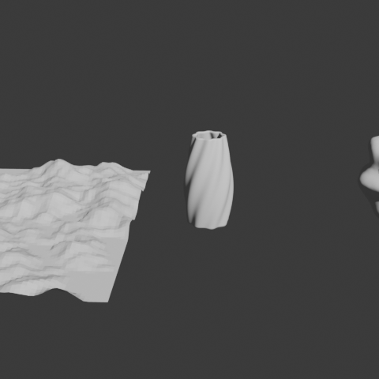

Blender 2
Meshes and Modifiers
Placing ready-made cubes is a start. This lesson builds geometry from functions, edits it in code, layers Blender's modifiers on top, and exports the result for 3D printing.
A mesh from lists
The most direct way to make geometry is to hand Blender two lists: the points, and the faces as groups of point numbers.
mesh = bpy.data.meshes.new("Terrain")
mesh.from_pydata(vertices, [], faces) # points, edges, faces
mesh.update()
obj = bpy.data.objects.new("Terrain", mesh)
bpy.context.scene.collection.objects.link(obj)The middle list is for loose edges and is normally empty: Blender works out the edges of the faces itself. Unlike STL or three.js, a Blender face may have four or more corners, so a grid needs one four-sided face per square instead of two triangles. The corner order still decides which side is the front: anticlockwise when seen from outside.

A terrain
A grid of points with a height from fractal noise. It is the terrain of Lesson 3 and of the three.js section, in Blender's terms.
N = 80 # cells along each side
SIZE = 8.0 # metres
vertices = []
for j in range(N + 1):
for i in range(N + 1):
x = (i / N - 0.5) * SIZE
y = (j / N - 0.5) * SIZE
z = 2.2 * max(0.0, fbm(x * 0.45, y * 0.45) - 0.42)
vertices.append((x, y, z))
faces = []
for j in range(N):
for i in range(N):
a = j * (N + 1) + i
faces.append((a, a + 1, a + N + 2, a + N + 1)) # one four-sided face per grid squareA surface from a function
Replace the height with a full position function of two parameters and the same grid becomes any surface. For a shape that goes all the way round, the last column of faces joins back to the first, which the % NU below takes care of. This is the lofted vase from the 3D printing lessons.
def vase(u, v):
"""u goes round the vase, v goes up it. Both run from 0 to 1. Units are millimetres."""
angle = u * math.tau + v * 1.4 # the twist: angle shifts with height
profile = 0.8 + 0.3 * math.sin(v * 2.9 + 0.3) - 0.12 * v # the silhouette
ribs = 0.05 * math.sin(u * math.tau * 8) # eight ribs
r = 30.0 * (profile + ribs)
return (r * math.cos(angle), r * math.sin(angle), v * 120.0)
NU, NV = 96, 60
vertices = [vase(i / NU, j / NV) for j in range(NV + 1) for i in range(NU)]
faces = []
for j in range(NV):
for i in range(NU):
a = j * NU + i
b = j * NU + (i + 1) % NU # wrap round: the last column joins the first
faces.append((a, b, b + NU, a + NU))
faces.append(tuple(reversed(range(NU)))) # a floor: one face through the whole bottom ringNotice the floor: a single face with 96 corners. Blender is happy with that, and triangulates it on export.
Editing geometry with bmesh
from_pydata is for building from scratch. To change existing geometry, or to use Blender's own modelling tools from code, use the bmesh module. A bmesh is an editable copy of a mesh in which every vertex knows its neighbours and its normal, and it comes with the operations found in Edit Mode: extrude, bevel, subdivide, inset, bridge.
import bmesh
mesh = bpy.data.meshes.new("Blob")
bm = bmesh.new()
bmesh.ops.create_icosphere(bm, subdivisions=4, radius=1.0)
for vert in bm.verts: # push every vertex along its normal by noise
n = noise.noise(vert.co * 1.6 + offset)
vert.co += vert.normal * n * 0.45
bm.to_mesh(mesh) # write the result into the mesh
bm.free() # always free a bmesh when finishedThat is the vertex-displacement shader of the three.js section, done once on the processor. To edit a mesh that already exists, start with bm.from_mesh(obj.data) instead of creating a shape.
Modifiers: procedures that stay editable
A modifier is an operation applied to an object's geometry every time it is displayed, without changing the stored mesh. Modifiers stack, each working on the result of the one above. They are Blender's original procedural system, and they combine well with scripted meshes: your script makes a simple base, and modifiers do the heavy work.
| Modifier | Type name in Python | What it does |
|---|---|---|
| Solidify | SOLIDIFY | Gives a surface thickness. Turns an open shell into a printable wall. |
| Subdivision Surface | SUBSURF | Smooths a coarse mesh by subdividing |
| Array | ARRAY | Repeats the object in a line, or along a curve |
| Displace | DISPLACE | Pushes vertices by a texture |
| Boolean | BOOLEAN | Unions, subtracts or intersects with another object |
| Bevel | BEVEL | Rounds edges |
| Wireframe | WIREFRAME | Turns every edge into a strut: instant lattices |
| Skin | SKIN | Wraps a surface round a skeleton of edges: branches and veins |
| Screw | SCREW | Spins a profile round an axis, optionally rising: lathe shapes and springs |
| Remesh | REMESH | Rebuilds the surface as an even mesh, and merges overlapping parts into one skin |
| Decimate | DECIMATE | Reduces the face count |
| Geometry Nodes | NODES | A whole node graph: the next lesson |
solidify = vase_obj.modifiers.new("Wall", "SOLIDIFY")
solidify.thickness = 2.4 # in the mesh's own units: here, millimetres
solidify.offset = -1.0 # thicken inward, so the outside keeps its size
subdivide = blob.modifiers.new("Smooth", "SUBSURF")
subdivide.levels = 1 # in the viewport
subdivide.render_levels = 2 # when renderingThe vase function produced a surface with no thickness. One Solidify modifier makes it a vessel with a 2.4 mm wall, and that thickness remains a number you can change later.
Curves
For line-based work such as flow fields, tendrils and wire sculptures, use a curve object instead of a mesh. A curve is a list of points, and Blender can give it a round cross-section with a single setting, bevel_depth. That makes it the quickest way to turn streamlines from Lesson 5 into tubes.
curve = bpy.data.curves.new("Streamline", "CURVE")
curve.dimensions = "3D"
curve.bevel_depth = 0.03 # radius of the tube
spline = curve.splines.new("POLY")
spline.points.add(len(points) - 1) # a new spline already has one point
for point, (x, y, z) in zip(spline.points, points):
point.co = (x, y, z, 1.0) # the fourth number is a weight: leave it at 1
obj = bpy.data.objects.new("Streamline", curve)
bpy.context.scene.collection.objects.link(obj)Exporting for 3D printing
Blender has no fixed real-world unit for printing. The reliable convention is to model with one Blender unit as one millimetre, as the vase function does, and export without scaling. Modifiers are applied in the exported file but stay live in Blender.
bpy.ops.object.select_all(action="DESELECT")
vase_obj.select_set(True)
bpy.context.view_layer.objects.active = vase_obj
bpy.ops.wm.stl_export(filepath=path, export_selected_objects=True, apply_modifiers=True)This is one of the places where an operator is the right tool. bpy.ops.wm.stl_export is the exporter in Blender 4.1 and later. Older versions used bpy.ops.export_mesh.stl with different option names.
Before printing, check the model as in the 3D printing lessons. An add-on called 3D Print Toolbox, available through Blender's extensions preferences, reports non-manifold edges, thin walls and overhangs.
Key ideas
mesh.from_pydata(points, [], faces)builds a mesh from lists. Faces may have any number of corners.- A grid plus a height function is a terrain. A grid plus a position function is any surface.
bmeshedits geometry and gives access to Blender's modelling operations.- Modifiers are stacked, editable procedures. Solidify makes a surface printable.
- Curves with a bevel depth turn lists of points into tubes.
- For printing, treat one unit as one millimetre and export with modifiers applied.
Blender challenge 2
A Printable Form
Write a script that generates a printable object of your own design, using a function for the base shape and modifiers for the rest, and exports it as an STL.
Requirements
- The base shape comes from your own function, built with
from_pydataorbmesh. - At least two modifiers are added by the script, with their settings chosen in code.
- Modelled in millimetres, within 256 × 256 × 250 mm, with a flat base.
- Seeded: the seed changes the form, and is stored on the object as a custom property (
obj["seed"] = SEED) so that the file records how it was made. - The script exports the STL, named after the seed.
- You have opened the STL in a slicer and confirmed the size.
Ideas
- A lampshade: a lofted surface with a Wireframe modifier, then Solidify.
- A branching sculpture: a skeleton of edges from an L-system (Lesson 6) with a Skin modifier.
- A bowl of tubes: flow-field streamlines as curves on a hemisphere.
You are done when
- Five seeds give five objects that all slice without errors.
- Changing a wall thickness is a one-number edit.
References and further reading
The sources for this page, and other places that cover the same ground.
- Blender Foundation, BMesh Module (bmesh). The mesh-editing interface used for generated geometry.
- Blender Foundation, Blender Manual: Modifiers. Every modifier and its settings.
- Edwin Catmull and James Clark, “Recursively Generated B-Spline Surfaces on Arbitrary Topological Meshes”, Computer-Aided Design, 1978. The subdivision scheme behind the Subdivision Surface modifier.
- Mario Botsch, Leif Kobbelt, Mark Pauly, Pierre Alliez and Bruno Lévy, Polygon Mesh Processing, A K Peters, 2010. Mesh structure and the operations on it.